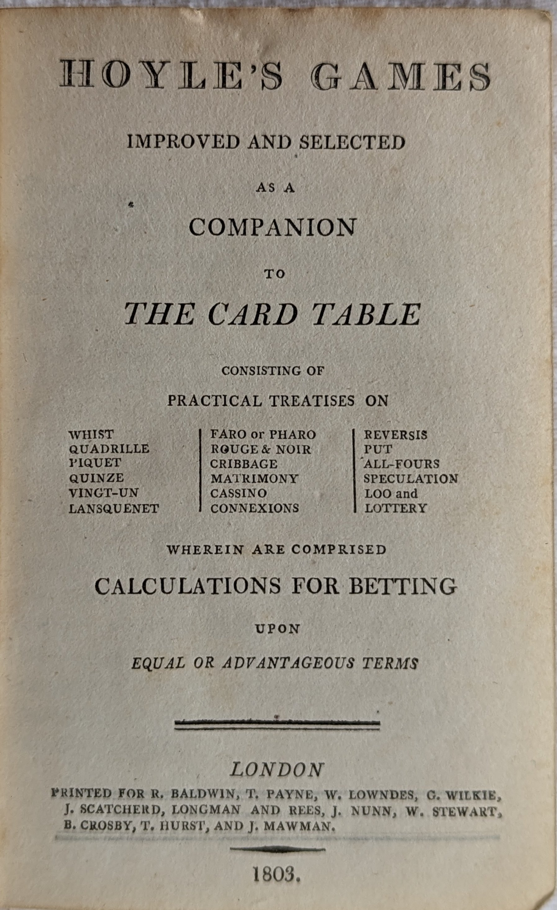
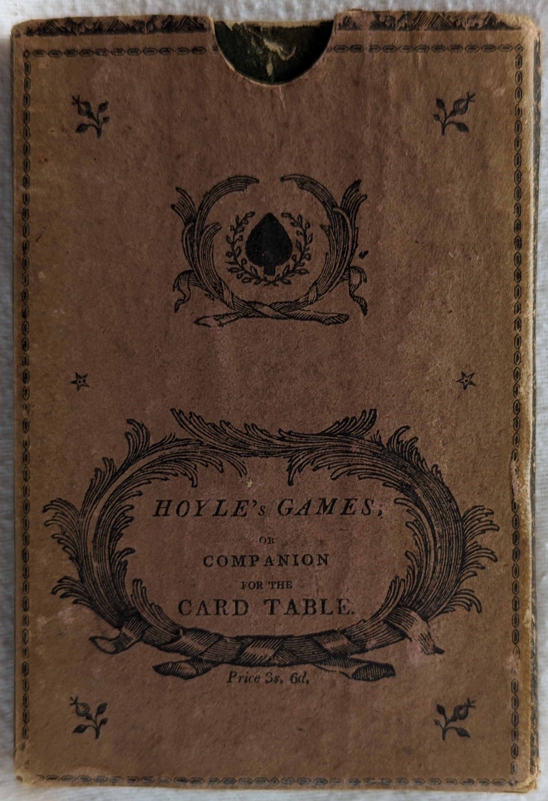

A Descriptive Bibliography of Edmond Hoyle
Copyright © 2014-26 by David Levy
(page updated 2023-11-18)User Guide
Jones.7-1
Companion to the Card Table, printed for R. Baldwin et al, extracted from the seventh London edition, 1803.
 |
Title: | HOYLE'S GAMES | IMPROVED AND SELECTED | AS A | COMPANION | TO | THE CARD TABLE | CONSISTING OF | PRACTICAL TREATISES ON | [6 lines to left of rule] WHIST | QUADRILLE | PIQUET | QUINZE | VINGT-UN | LANSQUENET | [6 lines between two rules] FARO or PHARO | ROUGE & NOIR | CRIBBAGE | MATRIMONY | CASSINO | CONNEXIONS | [6 lines to right of rule] REVERSIS | PUT | ALL-FOURS | SPECULATION | LOO and | LOTTERY | WHEREIN ARE COMPRISED | CALCULATIONS FOR BETTING | UPON | EQUAL OR ADVANTAGEOUS TERMS | [short oxford rule] | LONDON | PRINTED FOR R. BALDWIN, T. PAYNE, W. LOWNDES, G. WILKIE, | J. SCATCHERD, LONGMAN AND REES. J. NUNN, W. STEWART, | B. CROSBY, T. HURST, AND J. MAWMAN. | [decorative rule] | 1803. |
| Collation: | 18o: [A]2 B–Q6 R2 [$½ signed; signing G3 as G]; 94 leaves, pp. [4 ] [1] 2–183 [184] |
| Slipcase: |  |
[five lines within decorative wreath] HOYLE's GAMES. | OR | COMPANION | FOR THE | CARD TABLE. | Price 3s. 6d. |
| Contents: | Signature (Page) Reference | Contents | Signature (Page) Reference | Running Titles |
| A1r | title | |||
| A1v | ‘[oxford rule] | C. WHITTINGHAM, Printer, Dean Street, Fetter Lane. | [reverse oxford rule]’ | |||
| A2r | "The proprietors of Hoyle's Games Improved, ambitious of retaining that patronage which those who endeavour to serve or amuse the public generally acquire, have had the whole work carefully revised and enlarged with, as they hope, material corrections throughout; and supposing that the same might with propriety be divided into nearly two equal portions, one calculated for the card table, and most suitable for ladies, the other appropriate to the male sex, as containing games that require stronger exertion or more intense application; the proprietors consequently now first publish, in a convenient size and elegant manner, that part which they trust will prove most acceptable to their fair country-women, intending soon to print the rest in a similar form, so as to give a complete edition of a book containing the most fashionable games, both of skill and chance." | |||
| A2v | ‘CONTENTS. | [...]’ | |||
| B1r–R2r (1–183) | see Jones.7 | B2v–R2r (4–183) | see Jones.7 | |
| R2r (183) | ‘[...] | [colophon]’ | |||
| R2v (184) | ‘BOOKS | PUBLISHED BY | THE PROPRIETORS OF THIS WORK. | [...]’ |
| Plates: | on O3r(149) woodblock: a tapis or cloth covering the Rouge et Noir table |
| Publisher: | Robert Baldwin I, Thomas Payne, William Lowndes, George Wilkie, James Scatcherd, Longman and Rees, James Nunn, William Stewart, Benjamin Crosby, Thomas Hurst, Joseph Mawman |
| Printer: | Charles Whittingham (Chiswick Press Papers, colophon, Longman Archives) |
| Notices: | 1803-02-01 The Star: "A pocket edition, printed on fine wove paper, hot-pressed, price 3s. 6d. in a case like an almanack, or at various other prices in different elegant and fancy bindings; of Hoyle's Games Improved and selected as a Companion to the Card Table." Also advertised is Jones.6 indicating that there were unsold copies of the prior edition when Jones.7-1 was issued. |
| Price: | 3s.6d. (advertisement, slip case) |
| References: | Horr 680, Jessel 927, Rather 83 |
| Colophon: | ‘[oxford rule] | C. WHITTINGHAM, Printer, Dean Street, Fetter-Lane. | [reverse oxford rule].’ |
| Copies Seen: | O [38473 f.12]; O [Jessel f.606]; OCl [789.87H G3L]; Levy [1253] |
| Notes: | The card games from Jones.7, almost entirely the same setting of type. This book was issued before Jones.7. The Chiswick Press Papers show that Lowndes paid for printing 4000 copies of five sheets on January 25, 1803. This would have been 1000 copies of Jones.7.1 (advertised in February) and 3000 copies of the first part of Jones.7. On May 22, Lowndes paid for 3000 copies of six sheets, the second part of Jones.7. The Longman Archive gives a date of August 3 for the publication of Jones.7. Lackington, Allen & Co. does not appear on the imprint of this work, although they do on Jones.7, suggesting they bought into the copyright between February and August. |